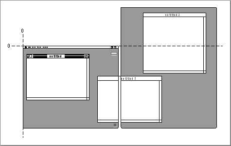
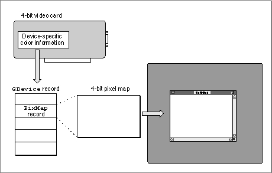

Multiple Screens
A video device is a piece of hardware, such as a plug-in video card or a built-in video interface, that controls a screen. To use more than one screen, a user may have more than one video device installed on his or her computer.In a drawing environment with multiple screens, the one with the menu bar is the main screen. Color QuickDraw maps the (0,0) origin point of the global coordinate plane to the main screen's upper-left corner, and other screens are positioned adjacent to it. In Figure 1-16, a full-page screen sits next to the main screen. Remember that each window--even a window that overlaps two screens--has its own local coordinate system with a (0,0) point at its upper-left corner.
Figure 1-16 A two-screen system

Color QuickDraw stores state information for a video device in aGDevice record.(Color QuickDraw createsGDevicerecords--basic QuickDraw does not, nor does basic QuickDraw support multiple screens.) When a computer supporting Color QuickDraw starts up, it allocates and initializes a handle to aGDevicerecord for each video device it finds. The firmware in the ROM for each video device supplies information about whether the device uses indexed or direct colors, how much video RAM is available, and so on. Some of this information is stored in theGDevicerecord, where it is available to the entire graphics system.As illustrated in Figure 1-17, when your application opens a color window, the
CGrafPortrecord for the window contains a handle to aPixMaprecord contained in the main screen'sGDevicerecord. ThePixMaprecord for your window thereby contains the correct pixel specifications for the main screen. Color QuickDraw internally calculates the changes required for drawing to any other screens.Figure 1-17 The
GDevicerecord and pixel map for a 4-bit video card
When a multiscreen system starts up, one of the screens is the startup screen, the screen on which the "happy Macintosh" appears. By default, the main screen is the startup screen. However, by using the Monitors control panel, the user can specify a different startup screen.During the startup of a multiscreen environment, system software calls the Window Manager procedure
InitWindowsto create a region that is the union of all the active screens (minus the menu bar and the rounded corners on the outermost screens). The Window Manager saves this region, called the gray region, as the global variableGrayRgn. The gray region describes and defines the desktop: the area in which the user can drag windows.Users can drag windows from one screen to another and even across multiple screens. Color QuickDraw calculates the global coordinates of the rectangle into which it must draw and issues the drawing command to each video device that the rectangle intersects.
For many applications, Color QuickDraw provides a device-independent interface; your application can draw images in a color graphics port for a window, and Color QuickDraw automatically manages the screen display--even if the user has multiple screens. Your application generally never needs to create
GDevicerecords. However, you may find it useful for your application to examineGDevicerecords to determine the capabilities of the user's screens. When zooming a window, for example, your application can useGDevicerecords to determine which screen contains the largest area of a window, and then determine the ideal window size for that screen.You may also wish to use the
DeviceLoopprocedure to optimize your application's drawing for screens with different capabilities. TheDeviceLoopprocedure searches for video devices that intersect your graphics port's drawing region, and it informs your application of each video device it finds. TheDeviceLoopprocedure provides your application with information about the pixel depth and other attributes of the video device on which drawing is currently taking place. Your application can then choose what drawing technique to use for the current device. When highlighting, for example, your application might invert black and white when drawing onto a 1-bit video device but use magenta as the highlight color on a color screen.